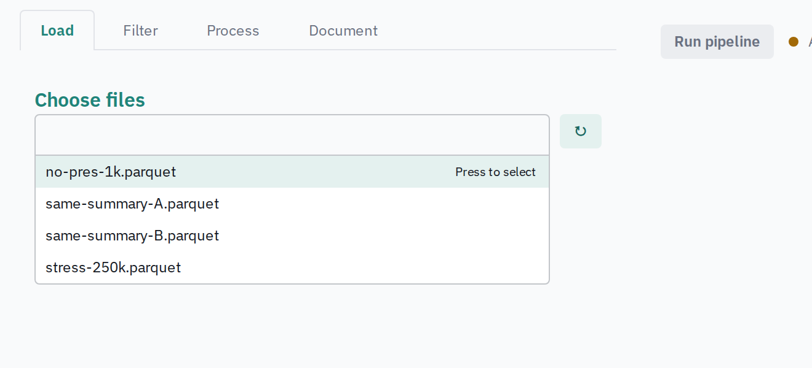
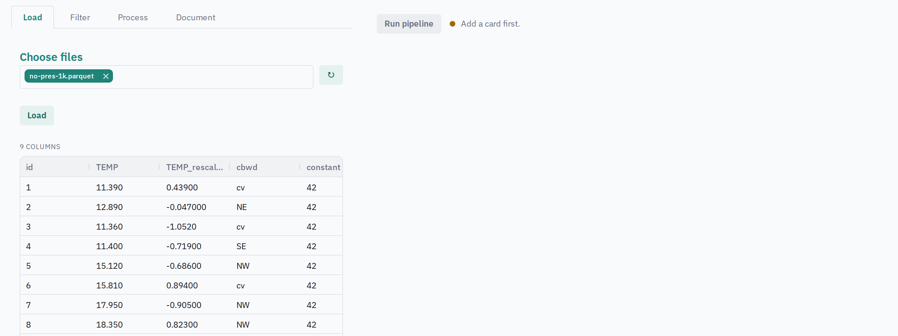
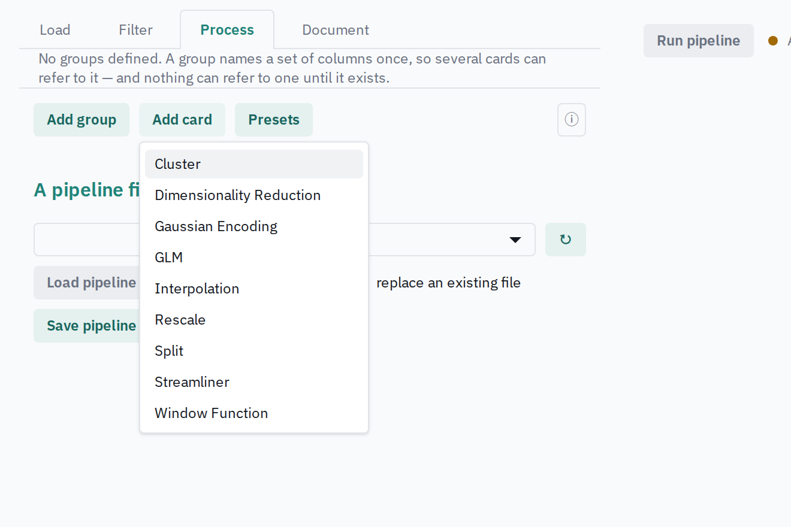
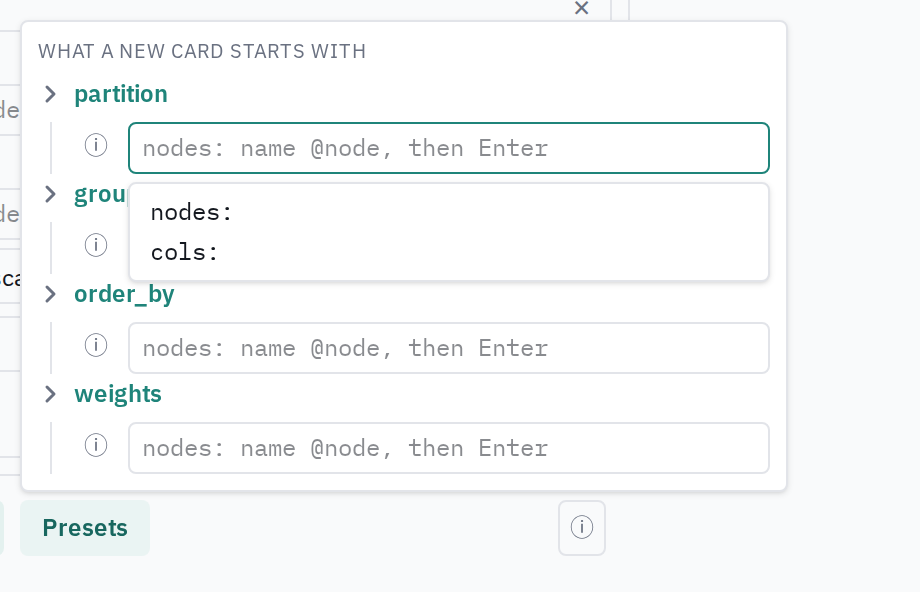
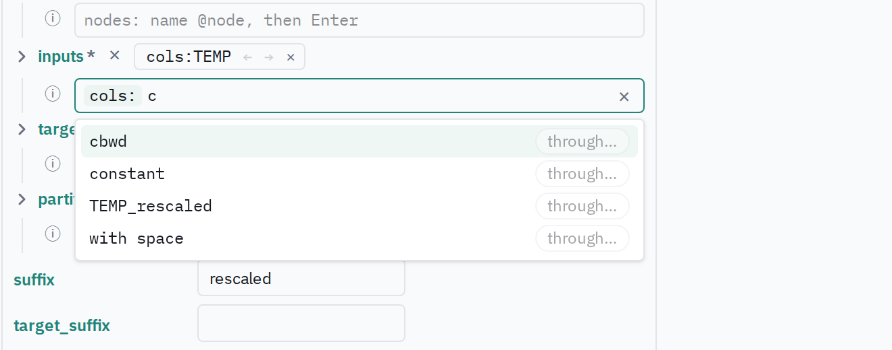

UI Guide
The UI is a browser page in two halves: on the left what you are building — the data, the filters, the pipeline — and on the right what the last run produced.
This guide has two parts. Using it is for anyone in front of the page. Working on it is for whoever will read or change the code.
Running it
Two processes. In one terminal, at the top of the repository, the Julia server — it holds the data and answers every question the page asks:
julia --project=DashiBoard bin/launch.jl path/to/workspacepath/to/workspace is the folder the page works in. Laid out, it has a folder per kind of file — data/ for tables, pipeline/ and filter/ for the documents, model/ and training/ for the configurations — and the page lists, loads and saves each kind in its own folder; nothing outside those folders is ever listed. A plain folder works too, with everything read from the root. bin/README.md has the layout, the dashiboard.toml that can name the folders and the extensions to load, and --init, which sorts a plain folder into the layout.
In a second terminal, the UI:
cd dashiboard-ui
pnpm run startThen open http://localhost:3000. The dev server forwards every API call to the Julia server, so the page and the API share an origin exactly as they will when the built bundle is served beside the server.
Both need their dependencies installed once; see Getting Started.
Using it
The four tabs
| tab | what it is for |
|---|---|
| Load | choose one or more files from the data folder and load them as the source table |
| Filter | narrow the rows: checkboxes for categorical columns, bounds for numeric ones |
| Process | build the pipeline — the groups and cards that add columns |
| Document | the exact JSON that will be sent when you run |
The right-hand side shows what the last run produced: the output table, any plots the cards drew, the graph of how the cards relate, and each card's report.
Loading data
Pick files in the Load tab and press Load. Only the workspace's data/ folder is listed, subfolders included, and only files DashiBoard can read.
A file that sits in a folder but is not what that folder holds — a filters document saved under pipeline/, say — is not offered; the picker says so in amber under its list, so you know where it is and what it was taken for.

The table appears on the right, and its columns become the vocabulary every picker offers from then on.

Building a pipeline
The Process tab holds three kinds of thing, and one row of actions at the foot of the list:
[Add group] [Add card] [Presets] ⓘA card
Add card opens a menu of card types. Picking one adds the card at the end of the pipeline and puts the cursor in its name box — the name is what other cards refer to it by.

A card is folded to one line: its type, its name, and a dot saying where it stands. Unfold it to fill in its fields. At its foot are three buttons:
- Confirm asks the server about this card alone and marks it green or red.
- Clear empties it back to what a new card of that type would hold.
- Remove deletes it.
The dot beside the name is amber until you ask, green or red once the server has answered, and amber again the moment you edit — an answer is only ever about the content it was given.
Two kinds of field need a word:
- A choice of kind — a
method, a funnel'stype, a model. Changing it keeps whatever the new kind also has: a funnel switched totimekeeps itsorder_by, its columns and their transforms, and a value the new kind does not offer goes back to its default. - A list of values — a split's
tiles, a cluster'sweights. Type the values separated by commas (1, 1, 2); when they come from a fixed set, the allowed ones sit below the box and a click adds one. A value that does not belong is named under the box and nothing is written until it is fixed. A line beneath the field's group, startingwrites, shows what the card will hold. A list where each value can appear only once, such as a streamliner'sselect, is a row of switches instead.
A group
Add group adds a named set of columns, so several cards can refer to one list instead of repeating it. A group is edited with the same picker a card's field uses, and carries the same three buttons.
Nothing can refer to a group until it exists, which is why groups are listed above the cards.
Presets
Cards usually share the same partition, order_by, group_by and weights. Presets opens a small panel where you set those once; every card created afterwards starts with them. Cards already on the page are never touched, and clearing a preset only affects the next card.

The list of fields is not hard-coded: it is every field at least two card types share, minus what a card actually operates on (inputs, targets, input).
Choosing columns: the selector field
Wherever a card asks for columns, you get the same control, and it accepts three kinds of thing:
- cols — a column of the loaded table;
- groups — a group you defined;
- nodes — everything another card produced.
Each choice may also pass through one or more cards, which names the column that card made from it. A chain is ordered: → impute → zscore is not → zscore → impute.
Cards that write more than one thing
Most cards write one thing for each column they are given: rescale writes PRES_rescaled. A card can write several, and then each has a name. A streamliner card whose model predicts a value and how sure it is writes two — prediction and logvar — so a target Iws comes out as Iws_hat and Iws_logvar. The prediction takes the card's suffix; everything else is named after itself.
Passing through such a card, or choosing it under nodes, takes everything it writes, unless you say which:
cols: Iws →fit Iws_hat and Iws_logvar
cols: Iws →fit|logvar Iws_logvar
cols: Iws →fit|logvar|prediction Iws_logvar, then Iws_hat
nodes: fit Iws_hat and Iws_logvar
nodes: fit|logvar Iws_logvarOnce such a card is taken, as a name under nodes or as a step, the list offers two ways on, under two headings: the nodes it may pass through next, and its products. The arrows reach both; Tab on a product keeps it and lists the rest. Wherever such a card is offered, it also has a select… beside through…, which takes it and lists only its products. select… does what typing | does, as through… does what typing @ does; add finishes.
The card itself decides what is written at all. When the model chosen yields more than one thing, the card shows a select field listing them, all taken to begin with; untick one and its column is never written. A model that yields one thing has nothing to choose, and the field is not shown.
Building a streamliner card
A streamliner card trains a model and writes its predictions. It has three parts.
model and training each list the configurations in the workspace's model/ and training/ folders. Choosing one shows the file itself, folded under the name, so what the configuration fixes — layers, loss, optimizer — can be read without opening it, and the settings it leaves open — the number of features, the number of iterations — as controls. The ↻ beside the name lists the folders again, for a file added while the server runs. When there is only one configuration there is nothing to choose, and its file and settings are shown straight away.
funnel says which rows and columns the model is fed:
order_by— the columns that put the rows in order. Required.inputs— the columns the model reads.targets— the columns it learns to predict.
All three are the same picker every other card uses, so an input can be a column, a group, or what another card produced.
Under inputs and under targets there is one row per column with a transform: identity, which leaves the column as it is, or log, log1p, sqrt, asinh. Two things to know:
- A transformed target is predicted in transformed units. Nothing converts the predictions back.
- A transform is applied as written.
logof a value that is not positive is not caught.
A row marked not among the inputs is a transform left over for a column the list no longer reaches — after an upstream card was renamed, say. The server refuses it; remove clears it. A categorical column has no transform to choose.
Presets fill order_by here as they do on any other card.
When the server is launched with an extension that adds another kind of funnel, funnel gains a type to choose, where default is the one described above.
partition names a column that is 1 for the rows to train on and 2 for the rows to validate on — what a split card writes, so the usual way is a split card chosen here under nodes. A model is kept only if its loss on the validation rows improves, so a card without a partition keeps none and cannot predict: Confirm shows a note saying so, with a script that trains it outside the UI for its statistics alone.
Confirm also checks that the model can be built for what the funnel feeds it. A time funnel hands the model windows — several steps of several columns — and a model whose last layer has no size of its own cannot produce a target of several steps; the card turns red at model with the sizes involved and what to change.
The field shows what it holds as chips beside its name, and offers two ways to add to it.
By typing
The box under the name takes kind, then a name, then optional pass-through steps:
cols: bill_length →impute →zscore| key | effect |
|---|---|
c, g or n then Tab | choose cols, groups or nodes |
type, then Tab | take the top match; ↑ ↓ choose another |
| a node name after a name | pass through it; repeat for a chain |
| ` | orselect…` after a node |
Enter | add it, as a chip |
Backspace | undo the last part |
Esc | close the list, then clear the box |
Tab with nothing typed | leave the field |
← from the empty box | reach the chips: Delete removes, Alt+←/→ reorder |
F1 | show these keys |

The list of suggestions is always showing while the box has the caret, and nothing is highlighted until you type or press ↓ — so Tab never takes a choice you did not make.
By clicking
Unfold the field to get the same vocabulary as a list, one tab per kind. Clicking a name adds it directly; through… opens the nodes it may pass through, which you switch on in the order you want them, then add. A card that writes several things also has select…, which opens the same builder with a first row to keep only some of them.
Only nodes that can actually take the value further are offered, and a card is never offered itself or anything that depends on it — those would make a loop the server refuses.
A node that writes several things shows them under its pill once it is switched on: keep only, then one switch per name. None switched on keeps them all.
Running
Run pipeline, top right. Beside it a dot says whether what is on screen has been run, and a line names anything that was asked about and refused. A pipeline can be run even so: the line says where to look, it does not stop you. A streamliner card whose model cannot be built for its funnel is the exception: the run stops before training anything and marks the card at model.
Saving
At the foot of the Process tab, Load pipeline and Save pipeline work on the whole document — its groups and its cards — in the workspace's pipeline/ folder; the name you type is relative to it, ends in .json, and may name a subfolder (experiments/first.json). Filters are saved the same way in filter/. Presets are yours, not the pipeline's, and are not saved with it.
Download pipeline gives you a zip, named after the file name without its .json, laid out as a workspace: the document under pipeline/, the model and training configurations it names under model/ and training/, the filters under filter/ when the Filters tab holds some, and a dashiboard.toml naming the extensions the document needs, each with where it came from: a path on this machine, or a repository URL. Unpacked beside the table, it is a workspace that launches and runs the same pipeline; on another machine, an extension given by a path is the one thing to edit. The data is not in it.
Download filters gives the filters document alone, as JSON.
Working on it
Where things are
| path | what lives there |
|---|---|
dashiboard-ui/src/stores.ts | the document, the filters, the verdicts, the presets — all module-level stores |
dashiboard-ui/src/left-tabs/ | the four sections of the left pane |
dashiboard-ui/src/components/ | the controls, chiefly SelectorField and IRField |
dashiboard-ui/src/ir.ts | the server's card description turned into widget descriptors |
dashiboard-ui/src/selector.ts, selectorEntry.ts, through.ts | the selector's model, its typed grammar, and which chains are possible |
DashiBoard/src/handlers.jl | every route the page calls |
Three ideas the code rests on
The store is the document. What is saved is the JSON that was authored, never a reconstruction from widget values. The stores are kept in sessionStorage, so a reload does not lose the work and two tabs do not overwrite each other.
The server owns names. A through chain names a column by concatenating card suffixes, and that rule lives in Pipelines. The UI never computes a resolved column name; it writes the document and asks the server what it got. POST /probe-pipeline answers on every edit with each card's inputs and outputs, what nothing produces, and what each item may refer to without a loop.
Red means you asked. An item is amber until a Confirm, a load or a run puts a question to the server. A verdict is bound to the exact content that was asked about, so any edit expires it. The continuous probe never turns anything red by itself.
The selector, in code
SelectorField draws one field. Its model is a list of items — {cols: [...], through: [...]} as the document holds them — expanded into rows of one value each for editing, and collapsed back on write (selector.ts). The same value may appear twice under different pass-through chains, which is why a row carries its chain.
selectorEntry.ts is the typed grammar as a pure state machine: kind → name → chain → finish, with no DOM, so every key in the table above is tested as data. through.ts decides which cards a chain may pass through next, from what the probe said each card reads and writes.
Tests
cd dashiboard-ui && npx vitest run # the UI
julia --project=DashiBoard/test DashiBoard/test/dashiboard.jl # the routes